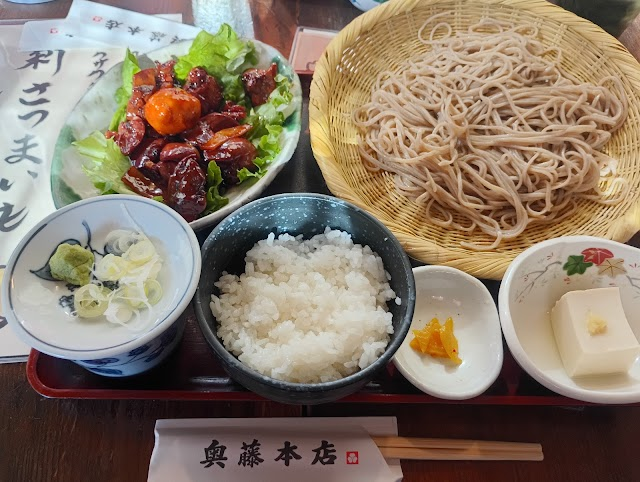
| 営業時間 | 月・火・木・金 11:30〜14:30, 17:00〜19:30 ／ 土・日 11:00〜14:30, 17:00〜19:30 |
|---|---|
| 定休日 | 水曜 |
| 住所 | 山梨県甲府市国母７丁目５−１２ |
| 予約 | 可 — ☎ 055-222-0910 ／ 公式サイト |
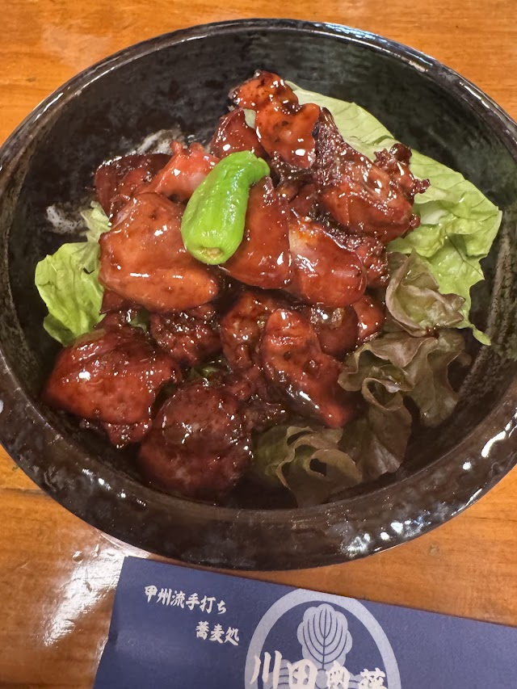
| 営業時間 | 月・火・木・金・土・日 11:00〜14:00, 17:30〜20:00 |
|---|---|
| 定休日 | 水曜 |
| 住所 | 山梨県甲府市川田町４８４ |
| 予約 | 可 — ☎ 055-232-5365 ／ 公式サイト |
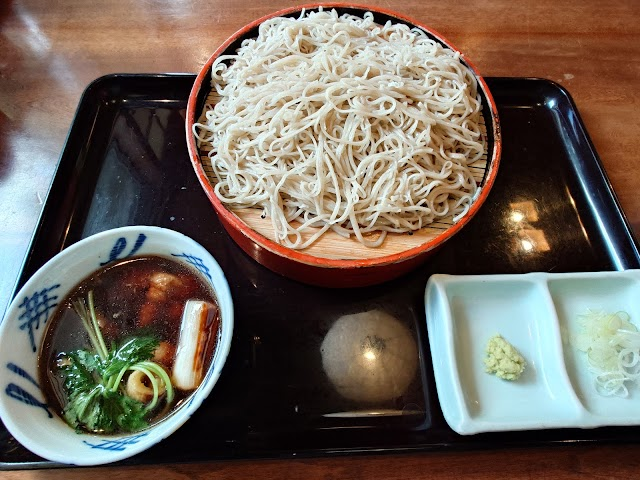
| 営業時間 | 月・火・木・金・土 11:30〜20:50 ／ 日 11:30〜19:50 |
|---|---|
| 定休日 | 水曜 |
| 住所 | 山梨県甲府市中央４丁目８−１６ |
| 予約 | 可 — ☎ 055-233-3340 ／ 公式サイト |
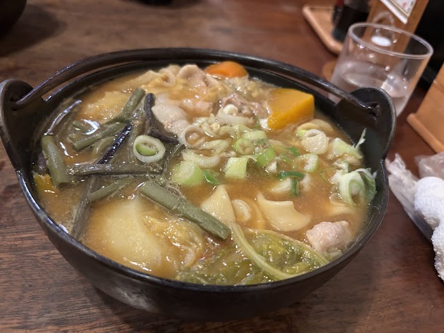
| 営業時間 | 月・火・水・木・金・土 11:00〜22:00 ／ 日 11:00〜21:00 |
|---|---|
| 定休日 | なし(要最終確認) |
| 住所 | 山梨県甲府市丸の内１丁目７−２ |
| 予約 | 可 — ☎ 055-233-8500 ／ 公式サイト |
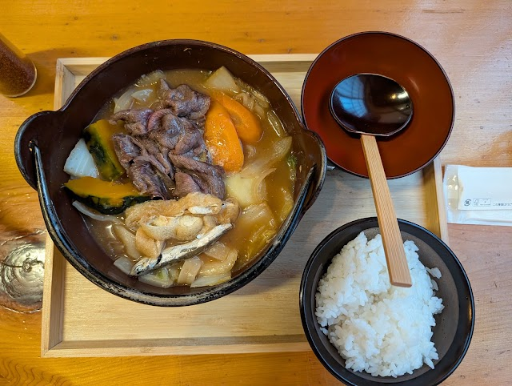
| 営業時間 | 火・水・木・金・土・日 11:00〜14:00, 17:00〜20:00 |
|---|---|
| 定休日 | 月曜 |
| 住所 | 山梨県甲府市徳行１丁目１３−１８ |
| 予約 | 要確認 — ☎ 055-226-5493 ／ 公式サイト |
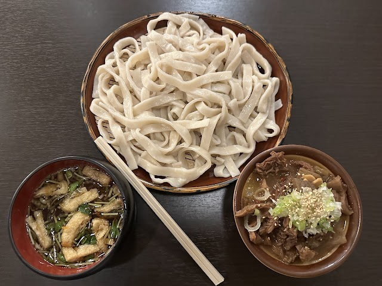
| 営業時間 | 水・木 11:30〜13:30, 18:00〜21:00 ／ 金 11:30〜13:30, 18:00〜22:00 ／ 土・日 11:30〜14:00, 18:00〜20:00 |
|---|---|
| 定休日 | 月・火曜 |
| 住所 | 山梨県甲府市丸の内２丁目４−８ |
| 予約 | 要確認 — ☎ 055-222-5613 ／ 公式サイト |
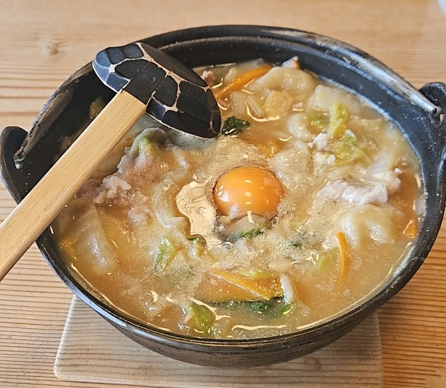
| 営業時間 | 火・水・木・金・土・日 11:00〜14:00 |
|---|---|
| 定休日 | 月曜 |
| 住所 | 山梨県甲府市上石田１丁目１３−１０ |
| 予約 | 要確認 — ☎ 055-222-2228 ／ 公式サイト |
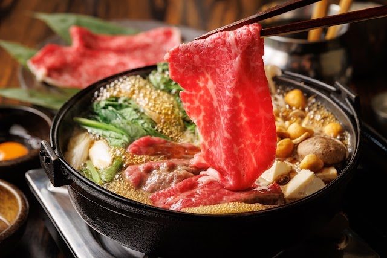
| 営業時間 | 月・火・水・木・金 11:30〜20:30 ／ 土・日 11:00〜20:30 |
|---|---|
| 定休日 | なし(要最終確認) |
| 住所 | 山梨県甲府市丸内１丁目１５−６ 地球堂ビル |
| 予約 | 可 — ☎ 055-223-1210 ／ 公式サイト |
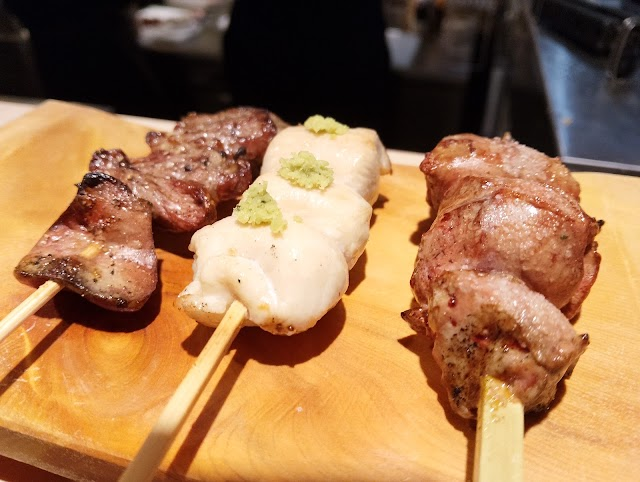
| 営業時間 | 月・火・水・木・金・土・日 17:30〜23:00 |
|---|---|
| 定休日 | なし(要最終確認) |
| 住所 | 山梨県甲府市中央１丁目４−８ Kagビル 1f |
| 予約 | 可 — ☎ 050-1807-0523 ／ 公式サイト |
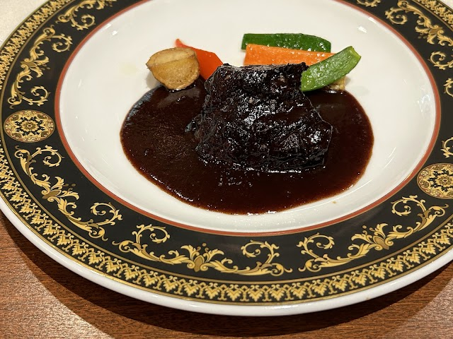
| 営業時間 | 月・火・水・木・金・土・日 11:30〜14:00, 17:30〜22:00 |
|---|---|
| 定休日 | なし(要最終確認) |
| 住所 | 山梨県甲府市中央１丁目５−１２ |
| 予約 | 可 — ☎ 055-233-7877 ／ 公式サイト |
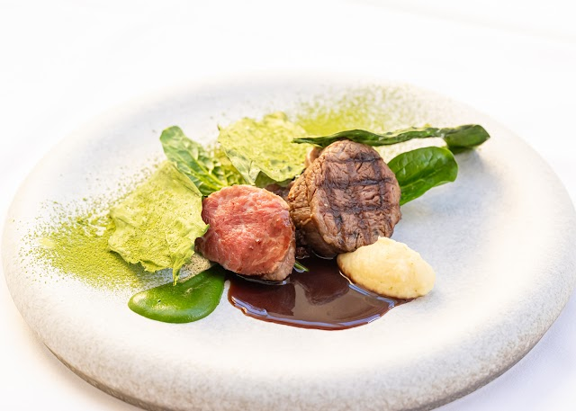
| 営業時間 | 月・水・木・金 11:30〜14:30, 17:30〜21:00 ／ 土・日 11:30〜13:30, 17:30〜21:00 |
|---|---|
| 定休日 | 火曜 |
| 住所 | 山梨県甲府市北口３丁目３−２４ |
| 予約 | 要確認 — ☎ 055-288-8723 ／ 公式サイト |
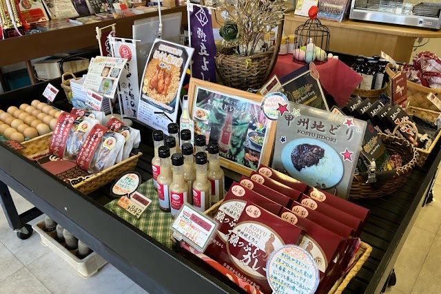
| 営業時間 | 月・火・水・木・金・土 10:00〜18:00 |
|---|---|
| 定休日 | 日曜 |
| 住所 | 山梨県甲府市伊勢２丁目１０−２ |
| 予約 | 要確認 — ☎ 055-222-0032 ／ 公式サイト |
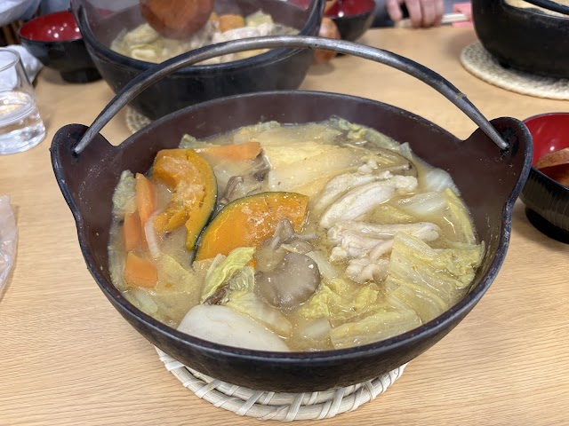
| 営業時間 | 月・火・水・木・金 11:00〜21:00 ／ 土・日 11:00〜22:00 |
|---|---|
| 定休日 | なし(要最終確認) |
| 住所 | 山梨県山梨市万力１０９１ |
| 予約 | 可 — ☎ 0553-23-1567 ／ 公式サイト |
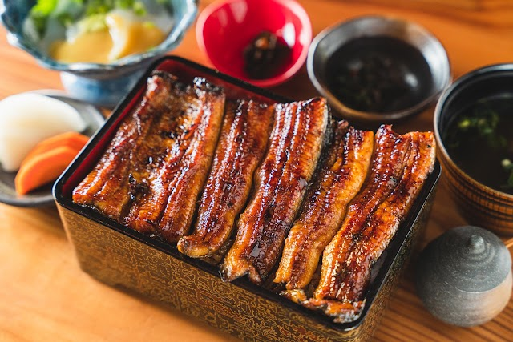
| 営業時間 | 月・火・水・木・金・土・日 10:30〜16:00 |
|---|---|
| 定休日 | なし(要最終確認) |
| 住所 | 山梨県甲府市猪狩町３９３ |
| 予約 | 要確認 — ☎ 055-287-2080 ／ 公式サイト |
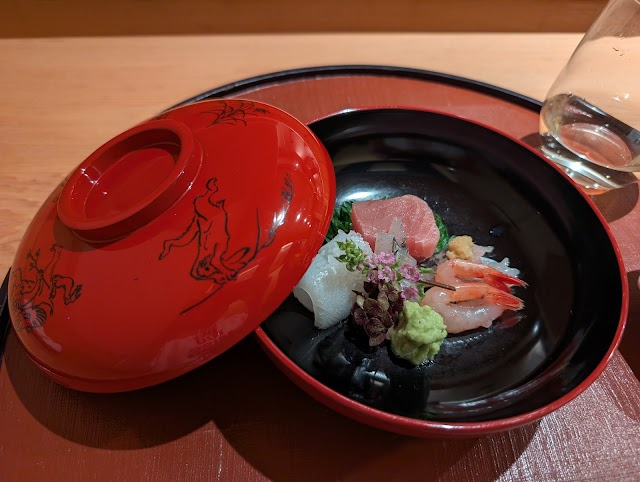
| 営業時間 | 火・水・木・金・土・日 18:00〜23:00 |
|---|---|
| 定休日 | 月曜 |
| 住所 | Maruchu Bldg., １丁目-６-6 中央 甲府市 山梨県 400-0032 日本 |
| 予約 | 可 — ☎ 055-226-2888 |
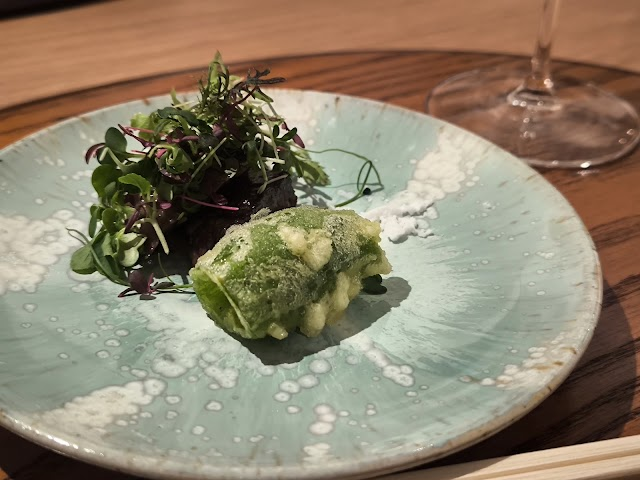
| 営業時間 | 月・火・水・木・金・土 18:00〜22:00 |
|---|---|
| 定休日 | 日曜 |
| 住所 | 山梨県甲府市中央２丁目１１−１０ 甲栄 ビル 2F |
| 予約 | 可 — ☎ 050-8883-0366 ／ 公式サイト |
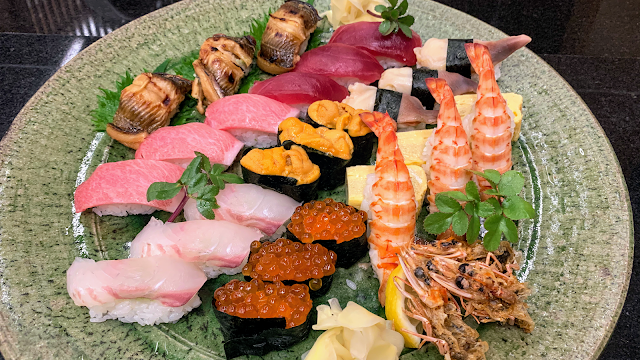
| 営業時間 | 水・木・金・土 11:30〜14:00, 17:00〜21:00 ／ 日 11:30〜14:00, 17:00〜20:00 |
|---|---|
| 定休日 | 月・火曜 |
| 住所 | 山梨県甲府市太田町２０−６ |
| 予約 | 可 — ☎ 0120-457-009 ／ 公式サイト |
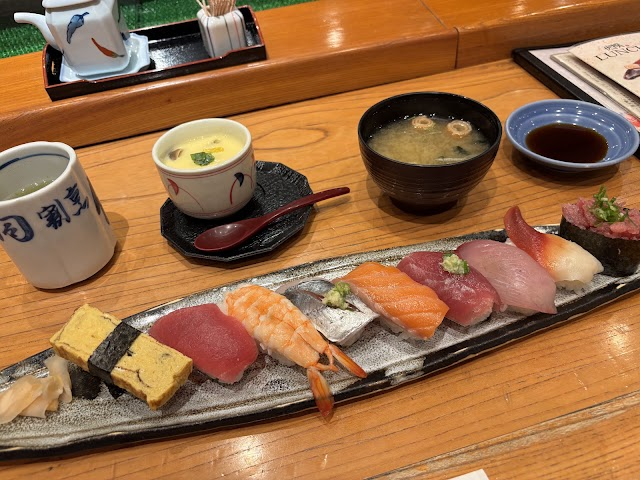
| 営業時間 | 月・火・木・金・土・日 11:00〜14:00, 17:00〜22:00 |
|---|---|
| 定休日 | 水曜 |
| 住所 | 山梨県甲府市飯田４丁目１−４ |
| 予約 | 可 — ☎ 050-5303-2300 ／ 公式サイト |
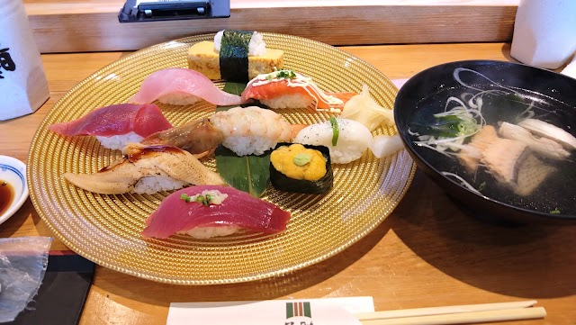
| 営業時間 | 月・火・木・金・土・日 11:00〜21:30 |
|---|---|
| 定休日 | 水曜 |
| 住所 | 山梨県甲府市国母８丁目３−１１ |
| 予約 | 可 — ☎ 055-225-2228 ／ 公式サイト |
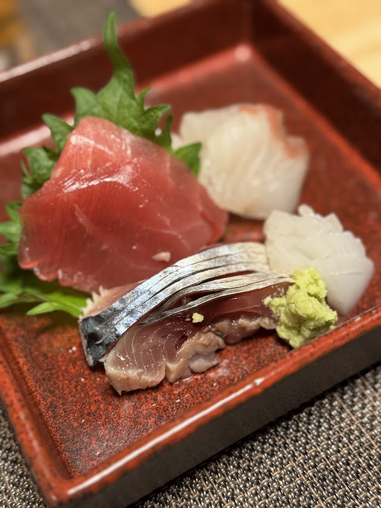
| 営業時間 | 月・火・水・木・金・土 17:00〜23:00 |
|---|---|
| 定休日 | 日曜 |
| 住所 | 山梨県甲府市中央１丁目１−４ |
| 予約 | 可 — ☎ 055-215-2163 ／ 公式サイト |
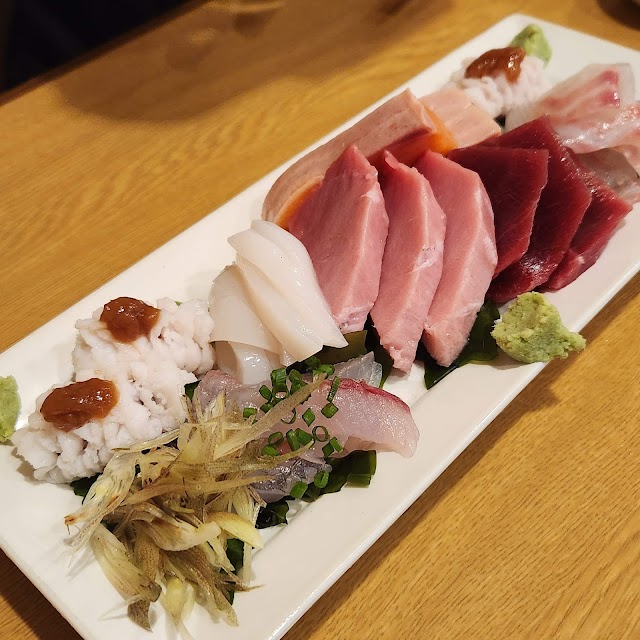
| 営業時間 | 月・火・水・木・金・土 18:00〜23:30 |
|---|---|
| 定休日 | 日曜 |
| 住所 | 山梨県甲府市中央１丁目７−６ |
| 予約 | 可 — ☎ 055-227-6600 |
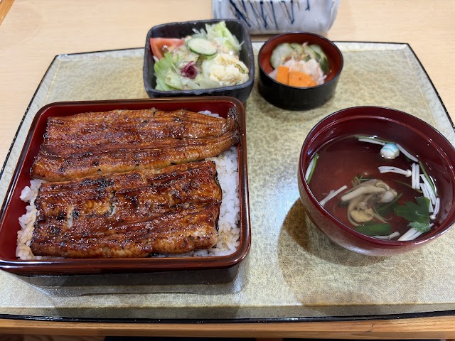
| 営業時間 | 火・水・木・金・土・日 11:00〜14:00, 17:00〜20:30 |
|---|---|
| 定休日 | 月曜 |
| 住所 | 山梨県甲府市丸の内２丁目９−２５ |
| 予約 | 可 — ☎ 055-224-5830 ／ 公式サイト |
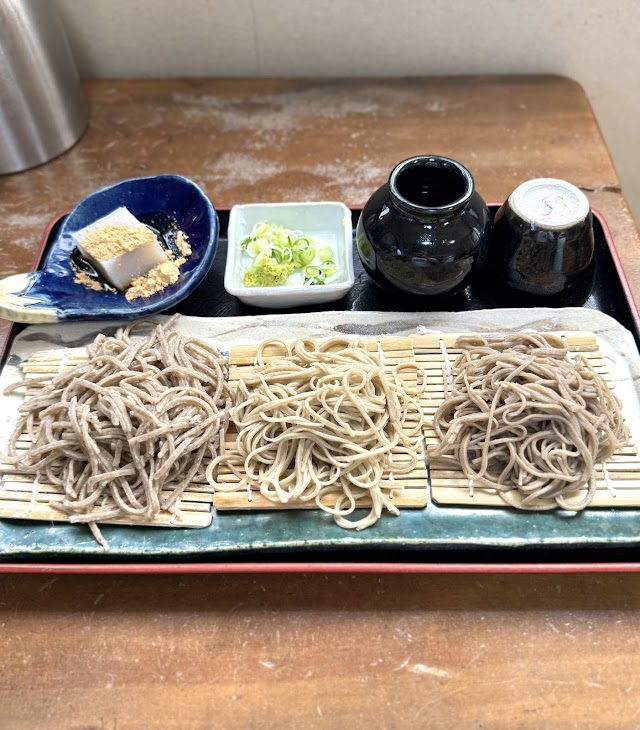
| 営業時間 | 月 11:30〜13:00 ／ 木・土・日 11:30〜14:00 |
|---|---|
| 定休日 | 火・水・金曜 |
| 住所 | 山梨県甲府市高畑１丁目１３−１８ |
| 予約 | 要確認 — ☎ 055-233-6095 |
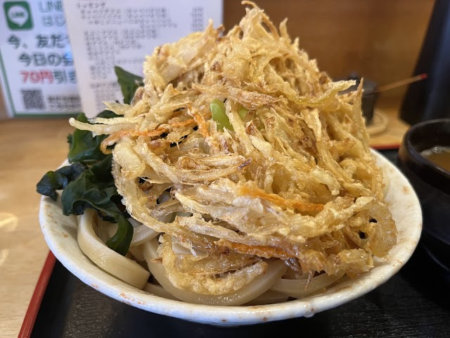
| 営業時間 | 月・火・水・木・金・土・日 11:00〜14:00 |
|---|---|
| 定休日 | なし(要最終確認) |
| 住所 | 山梨県甲府市高畑２丁目３−３ |
| 予約 | 要確認 — ☎ 090-3245-2757 |
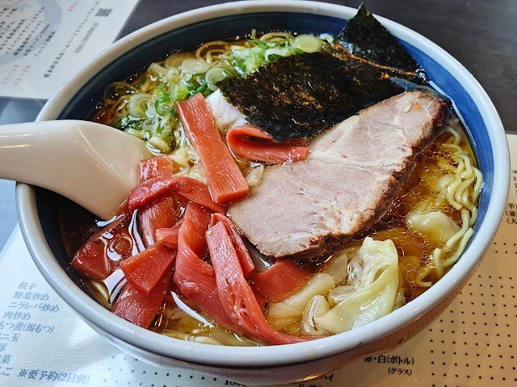
| 営業時間 | 月・水・木・金・土・日 11:30〜14:20, 17:30〜20:20 |
|---|---|
| 定休日 | 火曜 |
| 住所 | 山梨県甲府市中央４丁目１２−２８ |
| 予約 | 要確認 — ☎ 055-233-2458 ／ 公式サイト |
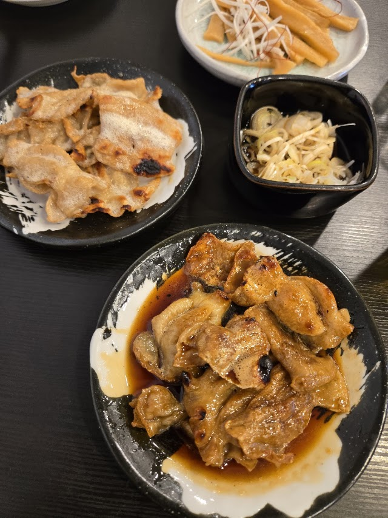
| 営業時間 | 月・火・水・木・金・土 11:00〜14:00, 17:00〜20:30 |
|---|---|
| 定休日 | 日曜 |
| 住所 | 山梨県甲府市下飯田２丁目３−１８ |
| 予約 | 要確認 — ☎ 055-228-0529 ／ 公式サイト |
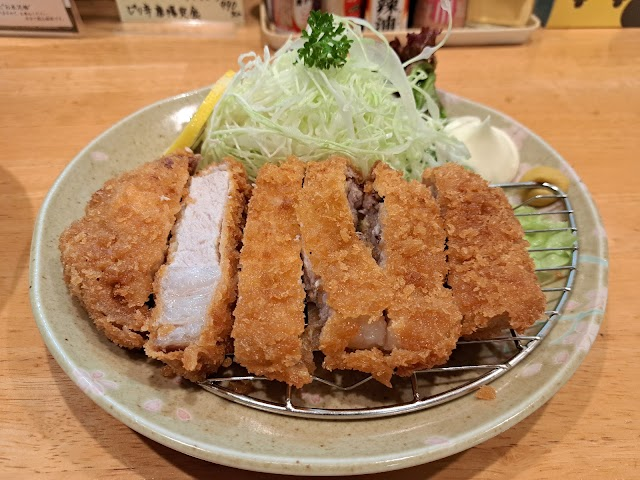
| 営業時間 | 月・火・金・土・日 11:00〜14:30, 17:00〜21:30 |
|---|---|
| 定休日 | 水・木曜 |
| 住所 | 山梨県甲府市住吉２丁目３−３３ |
| 予約 | 要確認 — ☎ 055-206-0100 |
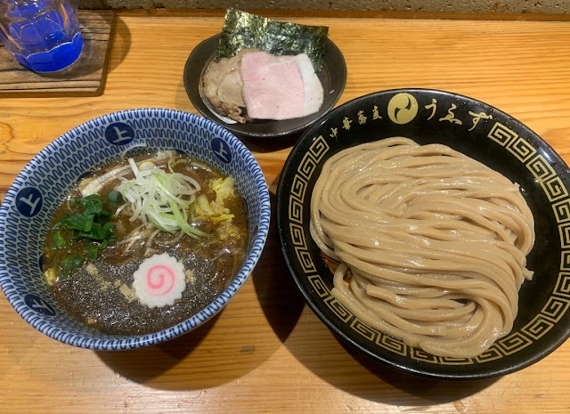
| 営業時間 | 月 11:00〜15:00, 20:00〜21:00 ／ 火・金 11:00〜15:00, 19:00〜21:00 ／ 木 11:00〜15:00 ／ 土 11:00〜17:00 |
|---|---|
| 定休日 | 水・日曜 |
| 住所 | 山梨県中巨摩郡昭和町清水新居５９−１ |
| 予約 | 要確認 — ☎ 055-287-8894 ／ 公式サイト |
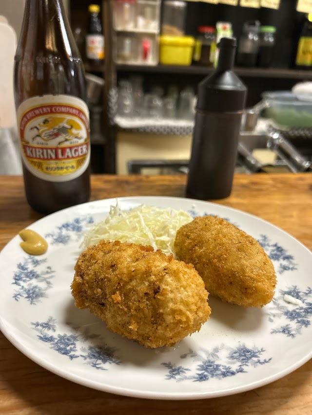
| 営業時間 | 火・水・木・金 17:00〜22:00 |
|---|---|
| 定休日 | 月・土・日曜 |
| 住所 | 山梨県甲府市中央１丁目２０−２３ |
| 予約 | 要確認 — ☎ 055-232-3948 ／ 公式サイト |
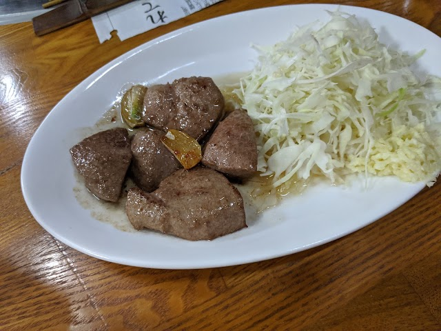
| 営業時間 | 金・土・日 15:00〜20:00 |
|---|---|
| 定休日 | 月・火・水・木曜 |
| 住所 | 山梨県甲府市中央４丁目２−１５ |
| 予約 | 要確認 — ☎ 055-232-3044 |
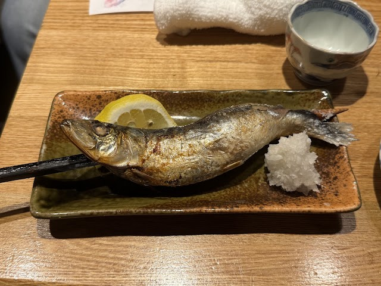
| 営業時間 | 火・水・木・金・土 17:00〜22:30 |
|---|---|
| 定休日 | 月・日曜 |
| 住所 | 山梨県甲府市丸の内１丁目１５−８ 三星ビル １F |
| 予約 | 可 — ☎ 055-244-6588 ／ 公式サイト |
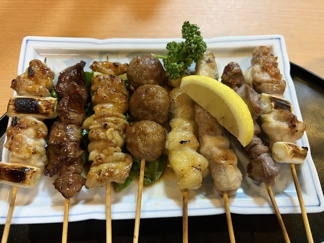
| 営業時間 | 月・火・水・木・金・土 17:00〜23:00 |
|---|---|
| 定休日 | 日曜 |
| 住所 | 山梨県甲府市丸の内２丁目１−５ |
| 予約 | 可 |
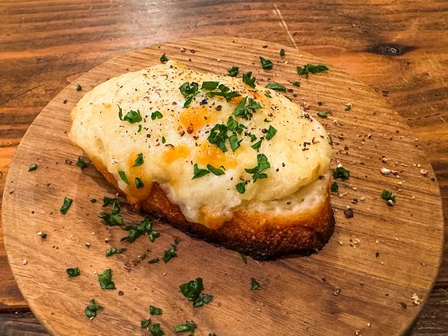
| 営業時間 | 17:00頃～21:00 L.O.（早仕舞いあり） |
|---|---|
| 定休日 | 日曜・不定休 |
| 住所 | 山梨県甲府市丸の内１丁目２０−２１ |
| 予約 | 可 — 公式サイト |
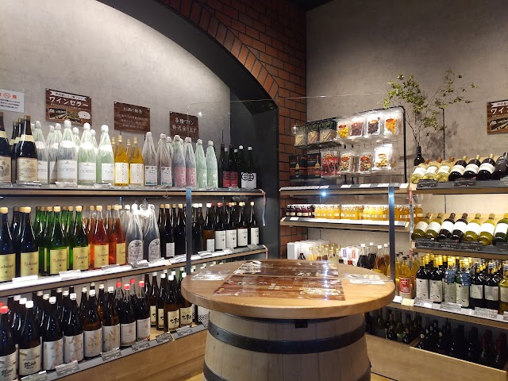
| 営業時間 | 月・火・水・木・金・土・日 10:00〜20:00 |
|---|---|
| 定休日 | なし(要最終確認) |
| 住所 | 山梨県甲府市丸の内１丁目１−８ 甲府駅 |
| 予約 | 要確認 — ☎ 055-269-5455 ／ 公式サイト |
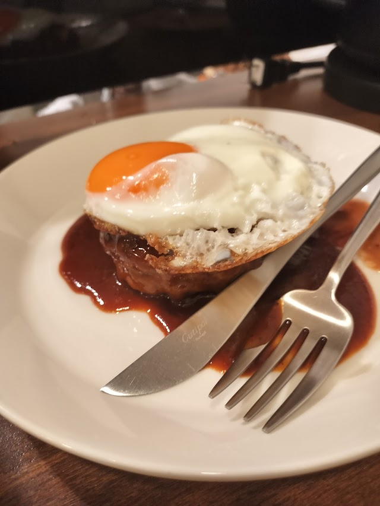
| 営業時間 | 木・金・土 19:00〜0:00 |
|---|---|
| 定休日 | 月・火・水・日曜 |
| 住所 | 山梨県甲府市中央１丁目１５−５ |
| 予約 | 可 — 公式サイト |
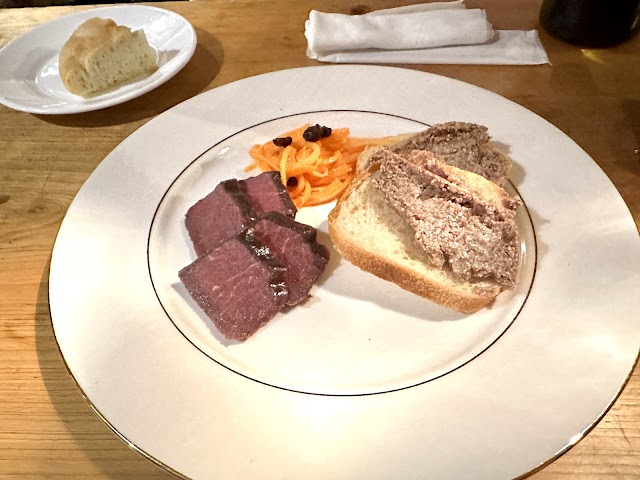
| 営業時間 | 月・火・水・日 18:00〜22:30 ／ 金・土 18:00〜23:00 |
|---|---|
| 定休日 | 木曜 |
| 住所 | 山梨県甲府市中央１丁目６−４ 芳野ビル 1F |
| 予約 | 可 — ☎ 055-231-5272 ／ 公式サイト |
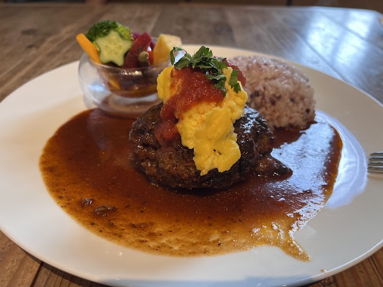
| 営業時間 | 水・木・金・土 11:30〜14:00, 18:00〜21:30 ／ 日 11:30〜14:00, 18:00〜19:30 |
|---|---|
| 定休日 | 月・火曜 |
| 住所 | 山梨県甲府市丸の内１丁目１−２５ |
| 予約 | 可 — ☎ 055-298-6668 ／ 公式サイト |
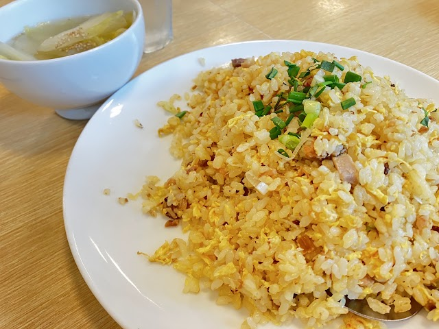
| 営業時間 | 月・火・水・金・土・日 11:30〜14:30, 17:00〜21:30 |
|---|---|
| 定休日 | 木曜 |
| 住所 | 山梨県甲府市上石田１丁目８−１ |
| 予約 | 可 — ☎ 055-288-0288 ／ 公式サイト |
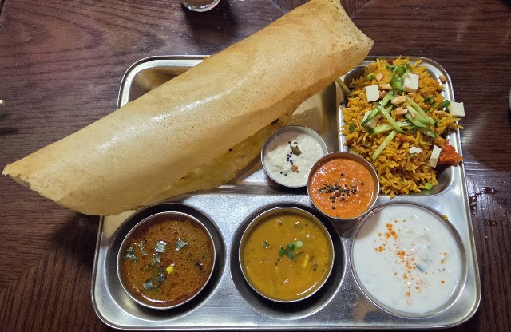
| 営業時間 | 月・水・木・金・土・日 11:00〜15:00, 17:00〜22:30 ／ 火 17:00〜22:30 |
|---|---|
| 定休日 | なし(要最終確認) |
| 住所 | 山梨県甲府市善光寺１丁目１２−５ |
| 予約 | 可 — ☎ 055-236-6688 ／ 公式サイト |
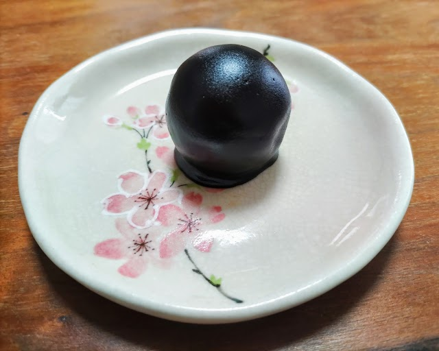
| 営業時間 | 月・水・木・金・土・日 10:00〜18:00 |
|---|---|
| 定休日 | 火曜 |
| 住所 | 山梨県甲府市中央４丁目３−２４ |
| 予約 | 要確認 — ☎ 055-235-1331 ／ 公式サイト |
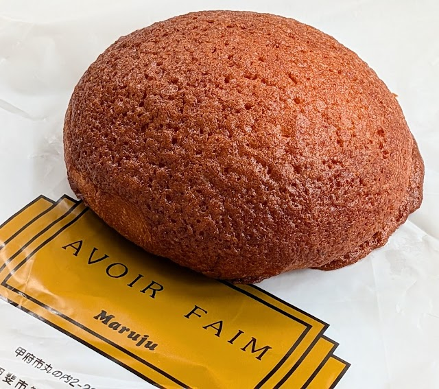
| 営業時間 | 月・火・水・木・金 6:30〜18:00 ／ 土・日 6:30〜17:00 |
|---|---|
| 定休日 | なし(要最終確認) |
| 住所 | 山梨県甲府市丸の内２丁目２８−６ |
| 予約 | 要確認 — ☎ 055-226-3455 ／ 公式サイト |
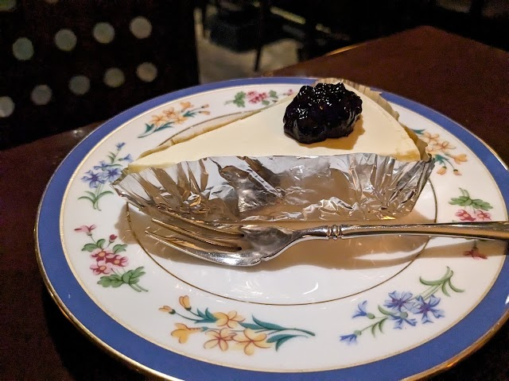
| 営業時間 | 月・火・水 11:00〜22:00 ／ 木 11:00〜17:00 ／ 金 11:00〜23:00 ／ 土 12:00〜23:00 ／ 日 12:00〜21:00 |
|---|---|
| 定休日 | なし(要最終確認) |
| 住所 | 山梨県甲府市中央１丁目１３−９ |
| 予約 | 要確認 |
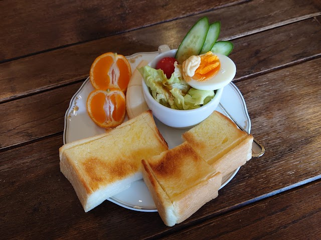
| 営業時間 | 火・水・木・金・土・日 12:00〜18:00 |
|---|---|
| 定休日 | 月曜 |
| 住所 | 山梨県甲府市丸の内１丁目８−１０ |
| 予約 | 要確認 — ☎ 055-237-9480 ／ 公式サイト |
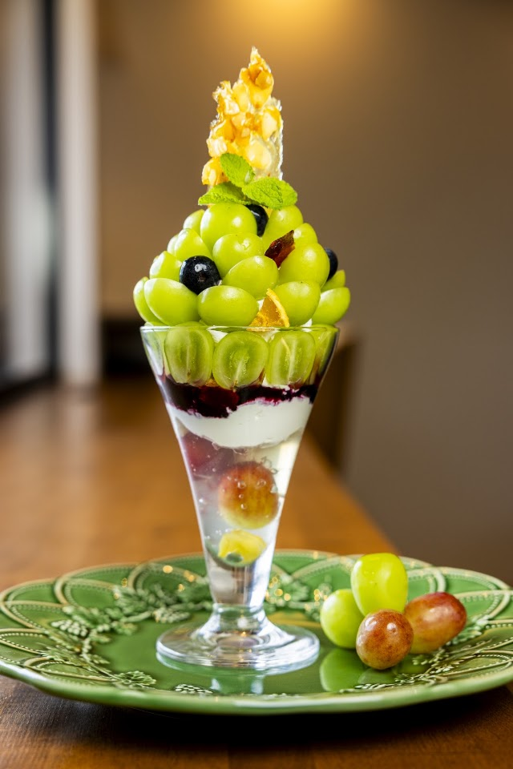
| 営業時間 | 金・土・日 11:00〜16:00 |
|---|---|
| 定休日 | 月・火・水・木曜 |
| 住所 | 山梨県甲府市蓬沢１丁目１５−６ |
| 予約 | 要確認 — ☎ 070-9117-2756 ／ 公式サイト |
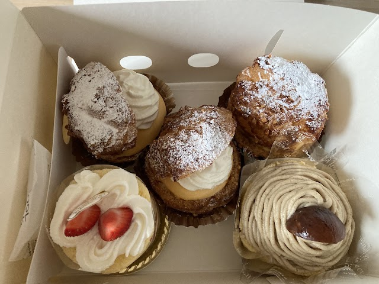
| 営業時間 | 月・火・木・金・土・日 10:00〜19:00 |
|---|---|
| 定休日 | 水曜 |
| 住所 | 山梨県甲府市飯田５丁目１６ |
| 予約 | 要確認 — ☎ 055-269-9035 ／ 公式サイト |
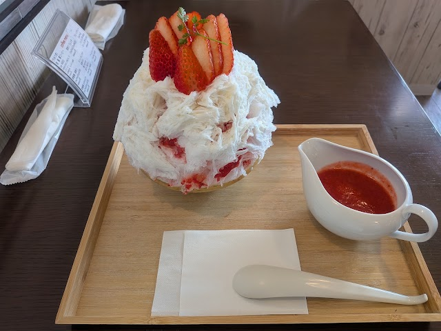
| 営業時間 | 月・火・水・木・日 12:00〜19:30 ／ 金・土 12:00〜19:30, 21:00〜0:00 |
|---|---|
| 定休日 | なし(要最終確認) |
| 住所 | 山梨県甲府市中央４丁目８−１４ |
| 予約 | 要確認 — ☎ 070-2158-0707 ／ 公式サイト |
本ガイドは個人利用目的で作成。掲載情報は2026年8月時点の調査に基づく。写真出典: Google Maps投稿写真(©各投稿者/Google)。